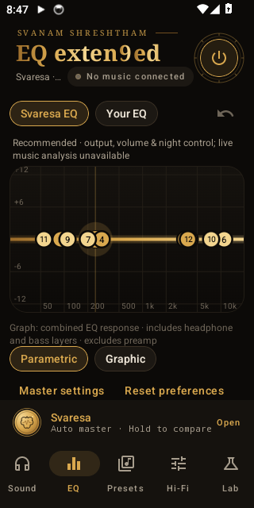
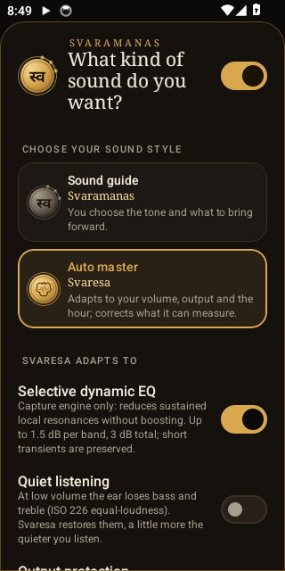
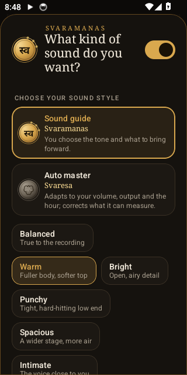

A curve of your own.
Parametric and graphic EQ. Frequency, gain and Q. Up to 256 parametric bands per channel, with your manual settings kept separate from automatic tuning.
Explore the EQANDROID, WITH A SOUND OF ITS OWN
The tracks you love. The headphones you know.
A little more room to make them yours.
Svaresa adapts. Svaramanas follows your taste.
Meet Svan, the system-wide equalizer for Android.
Free public beta · Android 10+ · No root required


Actual app screens · Android emulator
01 / AUTO MASTER
SvaresaYour music keeps moving. Svaresa is built to move gently with it: small, bounded changes when correction is called for, and restraint when it isn’t.
Illustrative curves, not measurements. This page does not process audio.
With capturable playback in the experimental Audiophile engine, Svaresa checks tonal balance and builds a bounded correction plan as you listen.
Live analysis needs a player that allows Android playback capture. Capture-blocked apps cannot use this path, and Bluetooth delay may occur.
On System effects, Svaresa uses your volume, output and the time of day to guide its adaptations. Start here for the recommended beta experience.
System effects has no live source analysis. Actual processing depends on the phone, player and output path.
02 / SOUND GUIDE
SvaramanasSome days, warm. Some tracks, punchy.
Sometimes, you want the voice a little closer.
Choose a sound feel and the instruments you want to bring forward. Svaramanas turns your priorities into a tuning plan with explicit limits.
A fuller body, with a softer top.
Explore the descriptions here. Choose and hear the actual tuning in Svan.
Take a closer look
03 / THE DETAILS ARE YOURS
Sound, considered.Let Svaresa lead. Fine-tune its applied gains.
Or return to your own saved manual curve.
Parametric and graphic EQ. Frequency, gain and Q. Up to 256 parametric bands per channel, with your manual settings kept separate from automatic tuning.
Explore the EQFind your headphones or IEMs in AutoEq data. Load a measurement-based correction, or import a profile you already trust.
Find your starting pointThe blind listening tool hides A/B identity and matches loudness for native-engine renders. Let your preference shape the choice.
About the beta04 / INSIDE SVAN
Brass on warm charcoal.
Purpose in every control.
Original Android emulator screenshots with demo settings. Real phone, player and output compatibility varies.
BEFORE YOUR FIRST LISTEN
An early beta, with room to grow.
Here’s what to expect.
Svan applies EQ to eligible Android audio sessions. Reach depends on your phone, player and output. Start with System effects and use Hi-Fi’s “Is it working?” view to check the connection.
Live Svaresa analysis needs the experimental Audiophile engine and playback the player allows Android to capture. Capture-blocked apps cannot use that engine.
Read the compatibility notes ↗︎No root is needed. Fresh installs start with System effects, a flat curve and 0 dB preamp. Shizuku is an optional setup helper for music detection when a player is unreachable; it isn’t required to open the app.
Read the setup guide ↗︎Svaresa is an on-device, rule-based controller today. It uses available measurements and explicit limits. Live tone corrections need capturable playback; System effects uses volume, output and time-of-day context.
It is experimental. It captures permitted playback, processes it through Svan’s 64-bit DSP chain and plays it back. Android asks for capture permission for each session. It can add delay, particularly over Bluetooth, and delay or echo has been reported on one phone.
Use System effects if that happens. The capture engine cannot provide bit-perfect or USB DAC passthrough.
Svan processes audio locally and does not upload captured playback. Headphone data is downloaded from GitHub when requested. Logs and screenshots are shared only if you choose to share them.
Read the beta privacy notes ↗︎The beta is free for personal evaluation. The code is publicly readable on GitHub, but the original Svan code is All rights reserved. Third-party data, code and fonts retain their own licences.
Try it with your phone, player and headphones. Report your Android version, output route, selected engine and what you heard. Even a report that processing didn’t work is useful. Listener preference and device compatibility are still being evaluated.
Send a device report ↗︎DEVELOPMENT UPDATE / 7 OCTOBER 2026
These changes are in the audio-quality development preview, not the public-beta download below. Release qualification is still in progress.
Phone performance, battery use and isolated loudness- and delay-matched listening checks on TECNO and LG remain pending. Existing screenshots are unchanged and do not demonstrate these new controls. Website design and new screenshot evidence will follow separately.
Read the implementation and verification status ↗︎SVAN 0.5.5 / PUBLIC BETA
Try Svaresa. Explore Svaramanas.
Find your sound, and tell us what you hear.
Android 10+ · arm64 & x86_64 · No root
An early beta. Start with System effects. Device and player compatibility varies.
Read the release notes and installation instructions before installing.